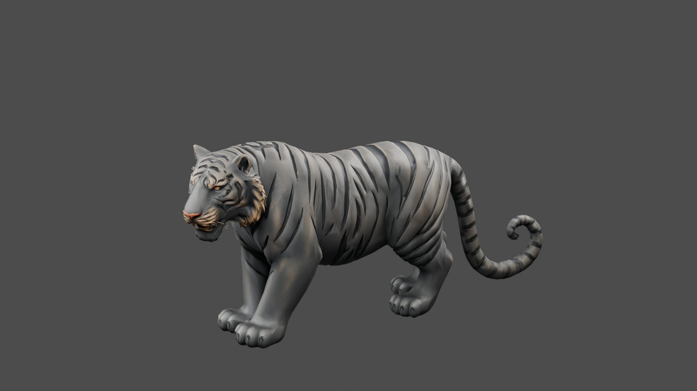
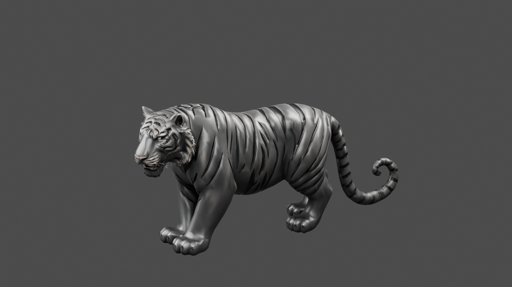
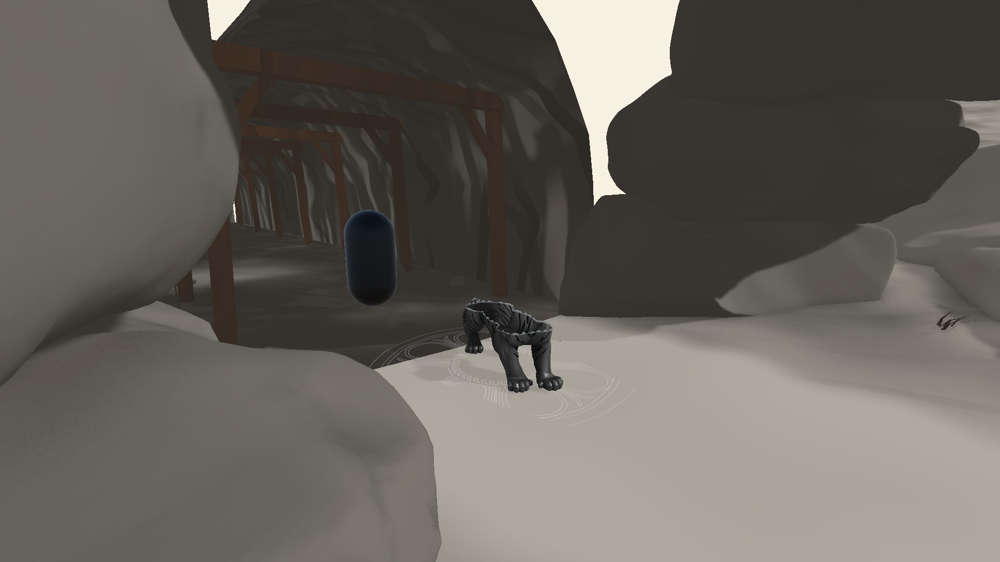
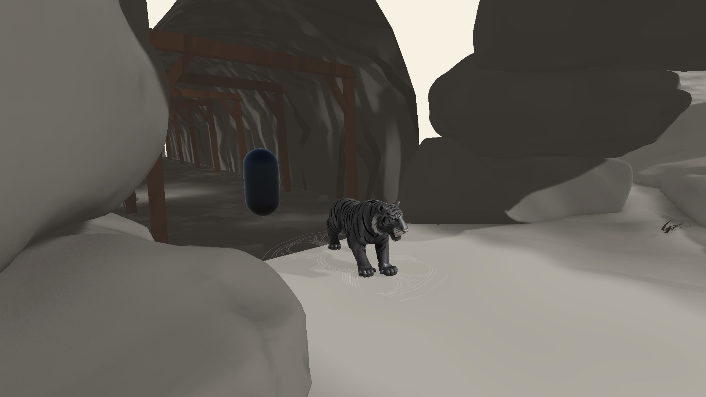

검은 줄무늬 · 절제된 은빛 광택 · 금 문양과 얇은 금속 조각
정적 외형·등장 연출 검토 / 리깅·전투 미연결
C2 1080p 진단 영상 2개. 실제 입력·적 AI 영상이 아닙니다.




12,414삼각형 · 재질 1개 · 전체 높이 1.40m · Meshy 추가 비용 0 · 수치 검사 48개 통과
0.2~1.2초 형성 → 3.8초까지 유지 → 4.6초까지 금속 조각과 짧은 섬광으로 소멸
변경·검증 보고서 · Blender·FBX·텍스처·프리팹 다운로드 · 놈 · 곰